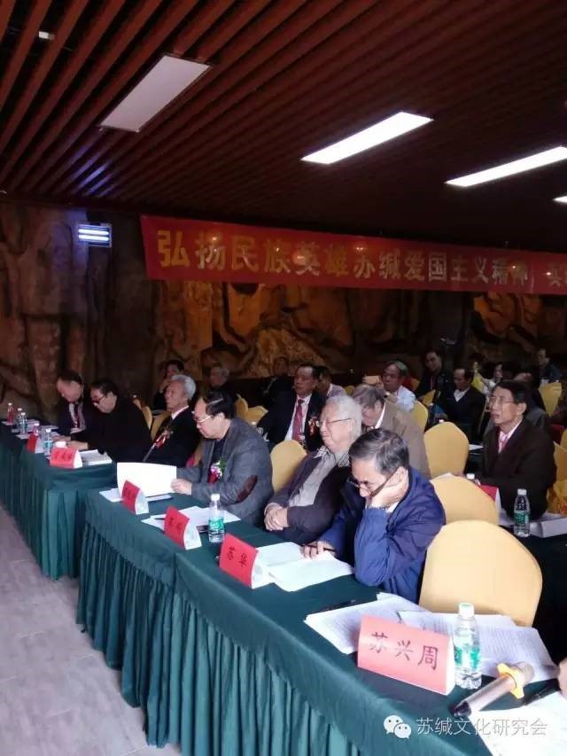
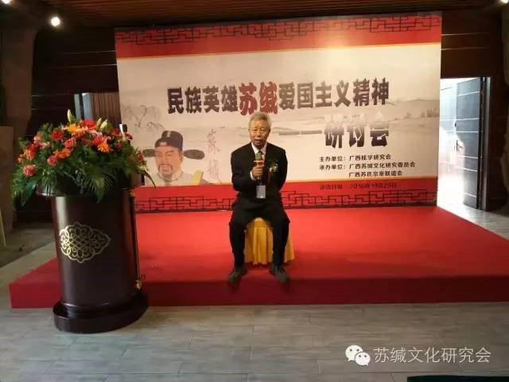
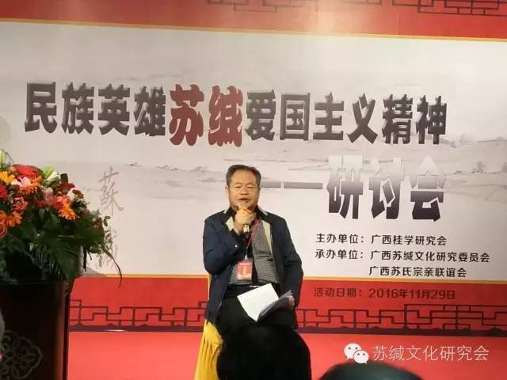
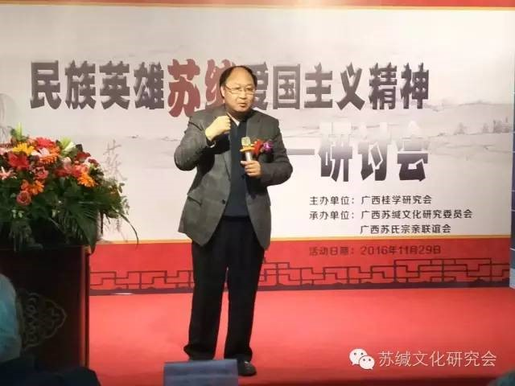
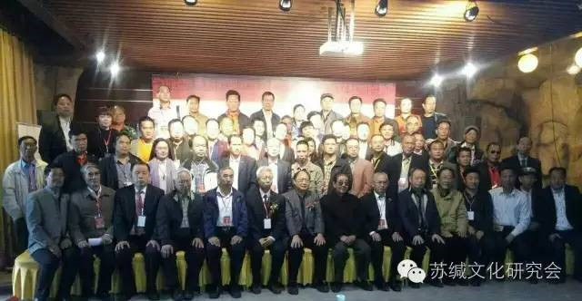

南宁举行民族英雄苏缄研讨会
导读：2016年11月29日下午3点半，“民族英雄苏缄爱国主义精神研讨会”在广西南宁市龙门水都景区内的五星级山顶会议厅隆重举行……
2016年11月29日下午3点半，“民族英雄苏缄爱国主义精神研讨会”在广西南宁市龙门水都景区内的五星级山顶会议厅隆重举行。

广西桂学研究会副会长广西文联副主席赵如峰致欢迎词
这次大会的主办方广西桂学研究会副会长、广西区文联副主席赵如峰代表原广西区党委副书记、原广西区文联主席、广西桂学研究会潘琦会长致欢迎词。他说，爱国主义是中华民族的精神支柱，我们应不断地研究、挖掘、传承、弘扬。

图为苏缄爱国主义精神研讨会现场一角

管成学教授发表：苏缄爱国主义精神是怎样培养出来的？

苏振武教授发表：苏缄的人格风范和精神实质。
中科院何绍庚研究员发表：忠义心如铁，不负教育恩。
吉林省社科院毕万闻研究员发表：北宋苏缄指挥的邕州之战与当世中国南海的主权之争。
台湾苏克福发表：中华民族英雄苏缄爱国主义民族精神永垂不朽！
王兴文、苏信吉等专家学者在会上发表各自的论文。

苏道俨主席总结言
苏道俨主席在总结发言中，提出了研讨会今后工作应注意的一些问题。下午的研讨会在和谐团结传承爱国的氛围中圆满结束。

图为苏缄爱国主义精神研讨会集体合照
苏缄之忠国精神，就是对国家的忠贞和民族的忠诚，是爱国主义民族精神。中华民族英雄苏缄爱国主义民族精神将永垂不朽！
广西苏缄文化研究委员会
2016.12.2.